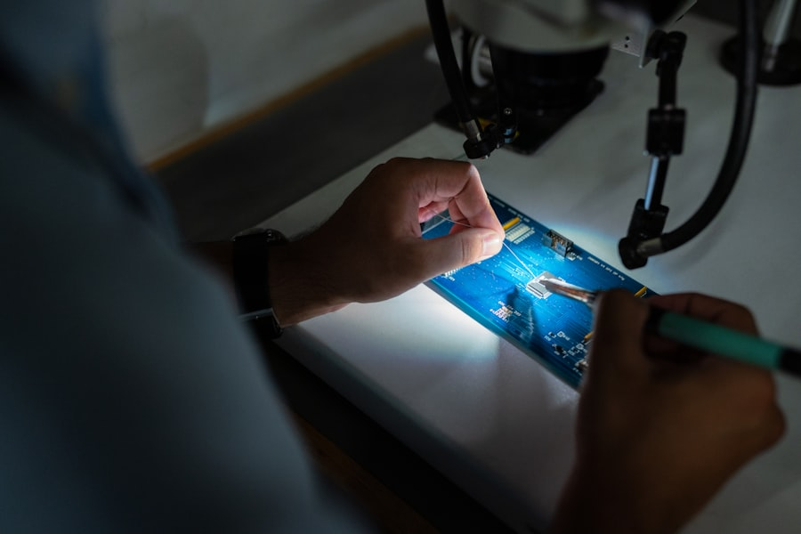
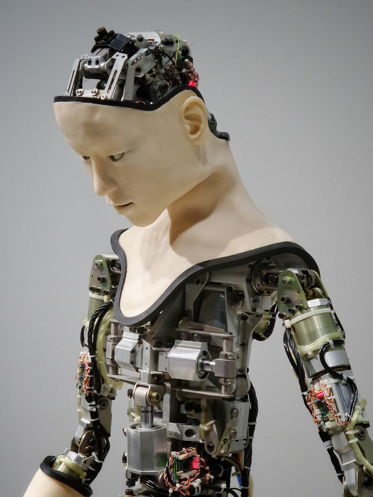

准确缺陷分类
适应零件、材料、位置和纹理变化，对复杂表面缺陷进行稳定识别与分类。
Trusted by manufacturers
Manufacturing outcomes
UnitX 风格的解决方案强调高速在线检测、复杂缺陷分类和持续数据洞察，让质量控制从人工抽检转向全量自动化。
适应零件、材料、位置和纹理变化，对复杂表面缺陷进行稳定识别与分类。
通过软件定义打光和小样本训练，缩短新产品、新缺陷与新产线的部署周期。
沉淀检测数据并联动产线指标，帮助工厂识别良率波动与工艺改进机会。
Products

Imaging
通过软件定义视觉系统，动态控制打光角度与模式，捕捉更清晰的缺陷图像。

Training
快速标注、训练和管理 AI 模型，让质量团队用更少样本持续优化检测效果。

Inference
在产线边缘实时检测、分类与通讯，支持高速缺陷判断和主流自动化系统集成。
Generative AI
利用生成式 AI 扩充训练样本，提升复杂缺陷、稀有缺陷和新材料检测的模型表现。
Turnkey system
面向高速产线的一站式在线检测设备，整合成像、AI 推理、自动化通讯与追溯数据。
Industry solutions
Resources
围绕工业视觉光源、飞拍检测、MES 融合、缺陷分类和典型应用案例，沉淀可复用的 AI 视觉检测知识。
About UnitX
个元科技（UnitX）以机器人控制、深度学习和工业视觉技术为基础，为全球制造商提供自动化检测整体解决方案。 本页面为静态仿写项目，内容依据公开官网信息进行重组表达。
Contact
提交检测场景、缺陷类型和产线节拍，获取自动化在线检测方案建议。